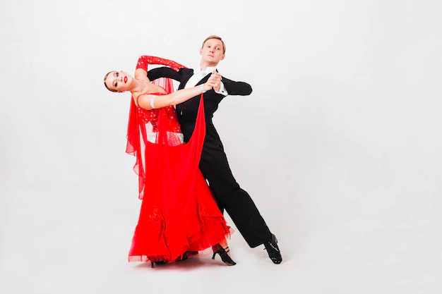

Taniec towarzyski
Wielu ludzi uważa, że taniec towarzyski to nie sport. Jednak myślą tak tylko ci, którzy niegdy go nie trenowali. Taniec potrafi być wyczerpujący i nawet po krótkim czasie można mieć zakwasy. Taniec towarzyski dzieli się na dwie główne grupy: tańce standardowe i tańce latynoamerykańskie. W obu tańczy się w parze.
Te pierwsze są raczej spokojne, poważne i wymagają dużego skupienia i opanowania. Zalicza się do nich między innymi: walc angielski, fokstrot, tango, walc wiedeński i quickstep. Można je kojarzyć z filmów, w których akcja dzieje się wiele set lat temu. Te czasy można uznać za początki tańców standardowych. Arystokracja spotykała się na balach i tańczyła te same tańce, które w obecnych czasach można oglądać na turniejach. Chociaż niektóre aspekty takie jak postawa tancerza czy niektóre kroki różnią się od wspólczesnych, to całość tańca pozostała ta sama. Zazwyczaj na występy kobieta zakłada długą suknie i upina włosy w ciasny kok, warkocz lub inną fryzurę tak, żeby nie przeszkadzały w tańcu. Profesjonalne tancerki występują w butach z niewielką szpilką. Muszą być wygodne i dobrze dopasowane, ponieważ bardzo łatwo o skręcenie kostki. Mężczyzni oryginalnie zakładali frak, jednak coraz częściej można zobaczyć ich w eleganckich garniturach i przylizanych na żel włosach. Na nogach mają specjalne buty z małym obcasem. Im wyższy poziom tancerzy, tym można dodawać więcej figur i kroków, które bardzo dużo znaczą dla jurorów.
Druga grupa, czyli tańce latynoamerykańskie takie jak: samba, rumba, cha-cha, pasodoble, jive, salsa są dużo bardziej skoczne, dynamiczne i szybsze. Początki mają w 19 wieku chociaż głównie rozwineły się w 20 wieku. Pochodzą z Ameryki Środkowej, chociaż w ich ewolucje miały udział także Stany Zjednoczone. Tam powstał m. in. jive. Ubiór różni się w tej grupie. Kobieta zakłada krótszą sukienkę w jaskrawych kolorach, często z różnymi dodatkami np. frędzlami. Mężczyzna już nie musi ubierać fraka ani garnituru, jedynie musi pozostać kolorystycznie dopasowany ubraniem do partnerki. Buty są te same co w standardowych. Kiedy ktoś chce tańczyć sportowo, czyli brać udział w turniejach, jeździć na występy i zarabiać na tym pieniądze, musi przechodzić do jak najwyższej. Są to kolejno od najsłabszej: E, D, C, B, A i najlepsza S.